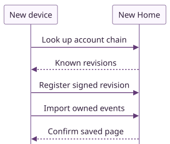

Accounts and recovery
A person can change devices or move Homes while keeping the same account public key.
Moving to another Home
The device opens the encrypted backup locally and checks the account history already known at the destination. With destination membership, it stages a new writing key and root-signed revision before registering. An interrupted import can resume with the same keys and original events.

Who can write
Each root-signed account revision names a Home, the authorized writing devices and the hash of its predecessor. Enrollment can add a device. Recovery or a move normally replaces the active set. A Home validates the chain and device proof and rejects a known fork. Each writing device maintains its own sequence counter.
What a backup contains
A passphrase-encrypted, root-signed archive carries recovery authority, owned history and supplied profile or preference data. The device can export locally saved acceptance receipts offline. An authenticated export from the Home can fill in older owned events. History that existed only on an unavailable Home may be missing. DM ratchets and private-group keys stay on their enrolled devices.
What happens to pending posts
A lost acknowledgement can leave a signed upload in doubt. The backup preserves it. During migration the owner can finish delivery or recover the signed content as a private draft for review. The destination imports validated history in pages with its original IDs and Home receipts. It keeps that history in a personal archive, separate from its public feed.
How the old Home learns
The device sends the signed revision chain to former Homes. A Home can advance an account it already knows without the old membership token. An offline Home enforces the latest revision it has received. Group membership and host authority have their own admission rules.